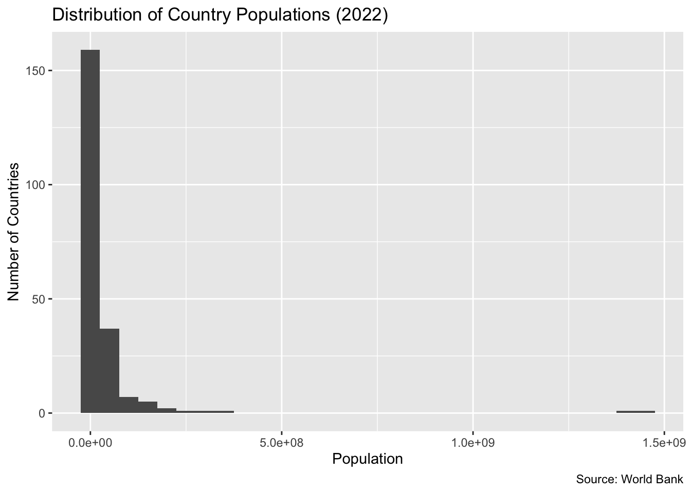
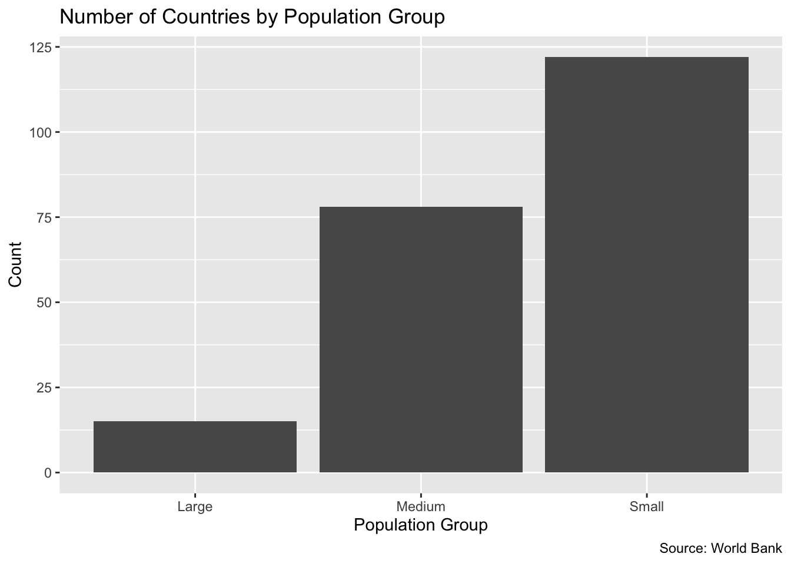
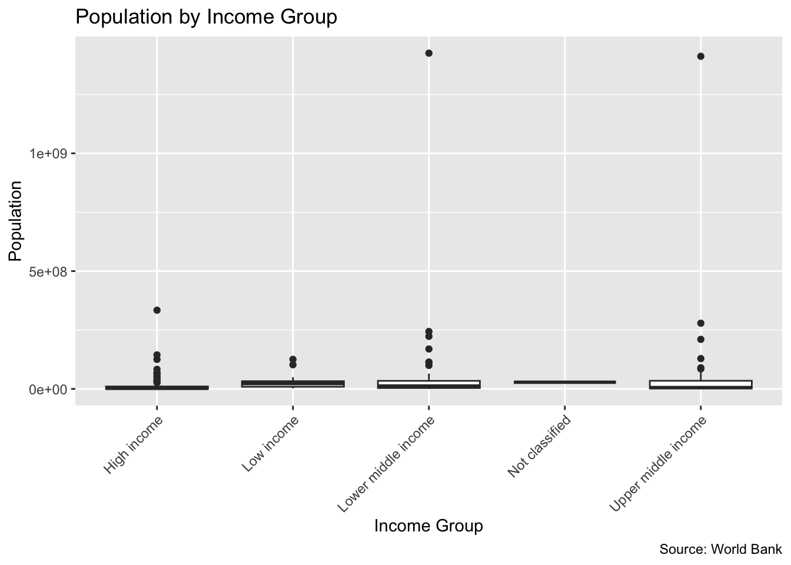

library(WDI)
library(tidyverse)Introduction
This dataset comes from the World Bank and contains information on country populations. Each observation represents a country in a given year, and for this analysis I focus on data from 2022 to examine how population is distributed globally.
The data was accessed using the World Bank database through the WDI R package, which retrieves data directly from the World Bank API.
I am particularly interested in population as a foundational variable in my broader research on the gendered impacts of economic sanctions. Population size and distribution shape how sanctions affect different groups, including access to resources, labor markets, and social services. Understanding global population patterns provides important context for analyzing how economic and political pressures may be experienced differently across countries.
The data was accessed using the World Bank database through the WDI R package.
Variables
The main variables used in this analysis are described below.
| Variable | Type | Description |
|---|---|---|
| country | Categorical | Name of the country |
| year | Continuous | Year of observation |
| population | Continuous | Total population of the country |
| region | Categorical | World Bank region classification |
| income | Categorical | World Bank income classification |
| pop_group | Categorical | Population size group created for analysis |
Data Cleaning
pop_data <- WDI(
country = "all",
indicator = "SP.POP.TOTL",
start = 2010,
end = 2022,
extra = TRUE
)pop_clean <- pop_data %>%
filter(region != "Aggregates") %>%
drop_na(SP.POP.TOTL) %>%
rename(population = SP.POP.TOTL)pop_2022 <- pop_clean %>%
filter(year == 2022) %>%
mutate(
pop_group = case_when(
population < 10000000 ~ "Small",
population < 100000000 ~ "Medium",
TRUE ~ "Large"
)
)The dataset required several cleaning steps before analysis. First, I removed aggregate observations such as “World” and regional totals so that each row represented an individual country. I then removed missing values for population and renamed the population variable to make it easier to use in plots and discussion. Finally, I filtered the data to include only observations from 2022 and created a categorical variable called pop_group to classify countries as small, medium, or large by population size.
Population Distribution
ggplot(pop_2022, aes(x = population)) +
geom_histogram(binwidth = 50000000) +
labs(
title = "Distribution of Country Populations (2022)",
x = "Population",
y = "Number of Countries",
caption = "Source: World Bank"
)
The distribution of population is highly right-skewed, with most countries having relatively small populations and a few countries having extremely large populations. This means the population distribution is very uneven across countries.
Population Groups
ggplot(pop_2022, aes(x = pop_group)) +
geom_bar() +
labs(
title = "Number of Countries by Population Group",
x = "Population Group",
y = "Count",
caption = "Source: World Bank"
)
Most countries fall into the small population category, while relatively few countries are classified as large. This reinforces the histogram by showing that very large populations are uncommon.
Comparing Population by Income Group
ggplot(pop_2022, aes(x = income, y = population)) +
geom_boxplot() +
labs(
title = "Population by Income Group",
x = "Income Group",
y = "Population",
caption = "Source: World Bank"
) +
theme(axis.text.x = element_text(angle = 45, hjust = 1))
This boxplot shows that population varies substantially within each income group. Some groups contain countries with much larger populations than others, and there are several outliers, showing that population size differs widely even among countries in the same income category.
Conclusion
This exploratory analysis shows that country populations in 2022 are distributed very unevenly across the world, with most countries having relatively small populations and a small number of countries accounting for a large share of the global total. These differences highlight how structural characteristics, such as population size, vary widely across national contexts.
This variation is especially relevant to my broader research on the gendered impacts of economic sanctions. Population size and distribution may shape how sanctions are implemented and experienced, influencing factors such as labor markets, access to resources, and the capacity of social services. For example, in comparative cases such as the Democratic Republic of the Congo and Afghanistan, differences in population size and structure may interact with political and economic conditions to produce different policy outcomes.
In future work, I am interested in examining whether characteristics like population and gender-related indicators are associated with different types of sanctions regimes, such as comprehensive versus targeted sanctions. This would help to better understand whether and how structural country-level variables influence not only the effects of sanctions, but also how they are designed and applied.